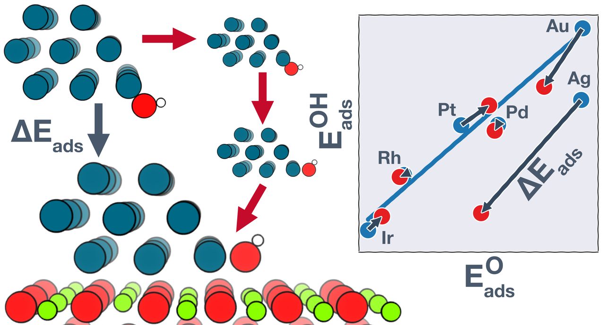

Computational Modeling of Catalytic Interfaces

The emergence of density functional theory (DFT) over the past few decades has enabled great progress in rational catalyst design for extended surfaces of transition metals. However, insights from such metal-only models may not translate directly to metal nanoparticles dispersed on high surface area supporting phases, where the metal and the support may both participate in catalysis. To understand how the metal-support interfacial reaction sites are different from pure metal sites, we investigate the adsorption behavior of common catalytic intermediates at the boundaries of late transition metals supported on MgO(100). We show that the oxide can either strengthen or weaken adsorption at the metal–oxide boundary, depending on the metal–adsorbate combination. Using a thermodynamic cycle, we trace the origins of these stabilization/destabilization effects to a combination of multiple structural and electronic perturbations, including strain and ligand effects, geometric reorientation, and charging of the adsorbate. These perturbations in some cases result in significant departures from the adsorption energy scaling relations developed on metal-only models. Computational screening studies based on typical scaling relations may thus miss potential catalyst materials where bifunctional gains are possible.
Related Publications
- P. Mehta, J. Greeley, W.N. Delgass, W.F. Schneider. Adsorption Energy Correlations at the Metal-Support Boundary. ACS Catalysis, 2017, 7, 4707. DOI: 10.1021/acscatal.7b00979. Supporting Dataset:

Related Poster

Comments
Comments powered by Disqus